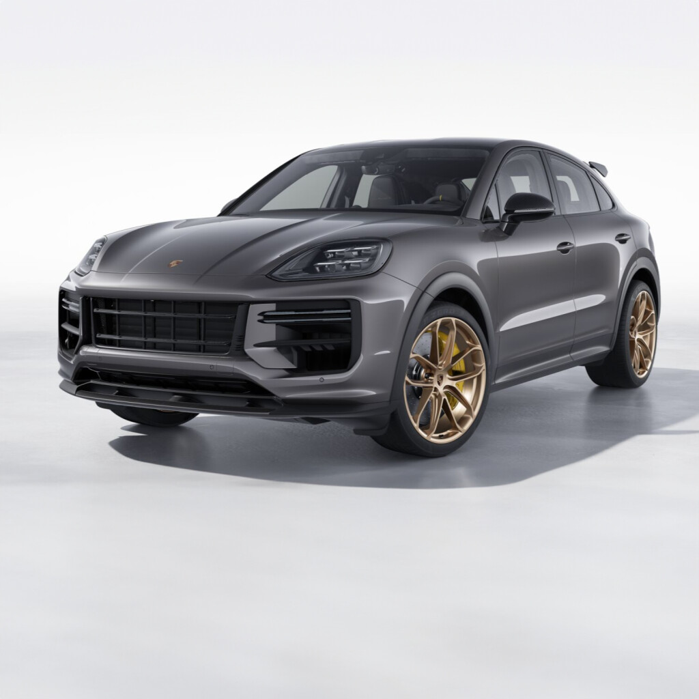

Porsche
Porsche Cayenne Turbo GT
أقوى وأسرع نسخة من كايين، تجمع بين أداء السيارات الخارقة وعملية سيارات الـSUV مع تجهيزات مخصصة للحلبات.
أقوى وأسرع نسخة من كايين، تجمع بين أداء السيارات الخارقة وعملية سيارات الـSUV مع تجهيزات مخصصة للحلبات.

| المحرك | 4.0 لتر V8 توين تيربو |
| عدد الأسطوانات | 8 |
| القوة | 659 حصان |
| عزم الدوران | 850 نيوتن متر |
| ناقل الحركة | 8 سرعات Tiptronic S |
| نظام الدفع | رباعي AWD |
| التسارع (0-100) | 3.3 ثانية |
| السرعة القصوى | 305 كم/س |
| عدد المقاعد | 4 |
| نوع الوقود | بنزين |